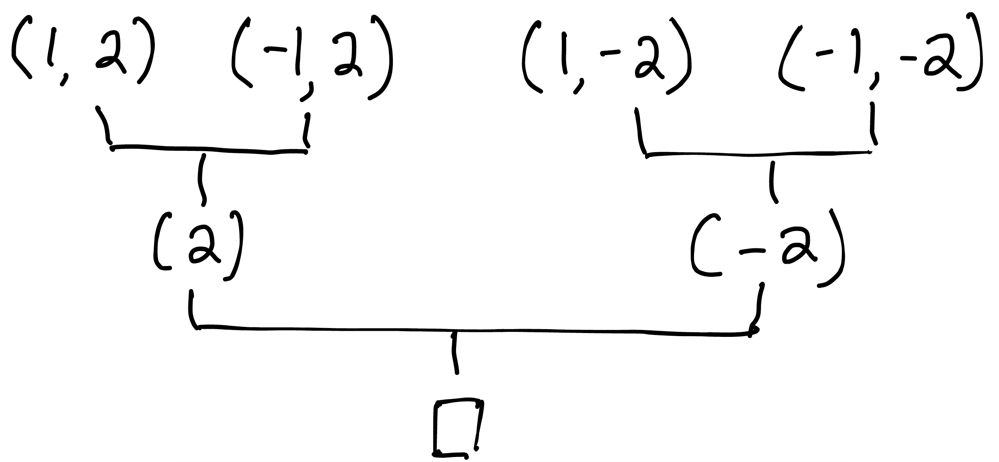
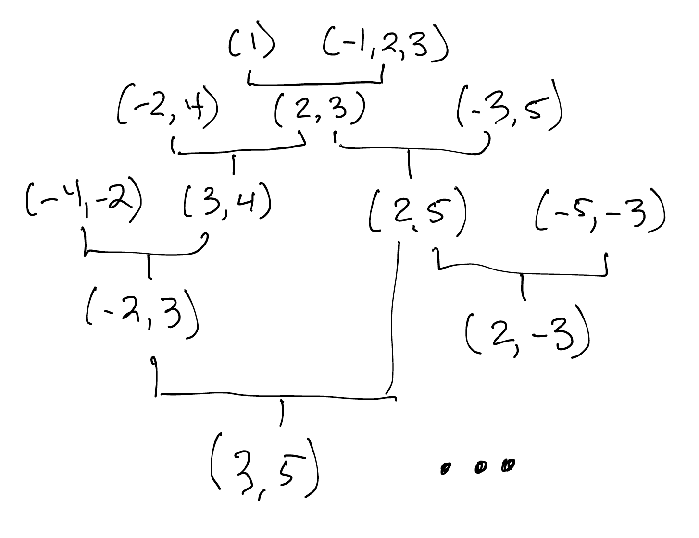
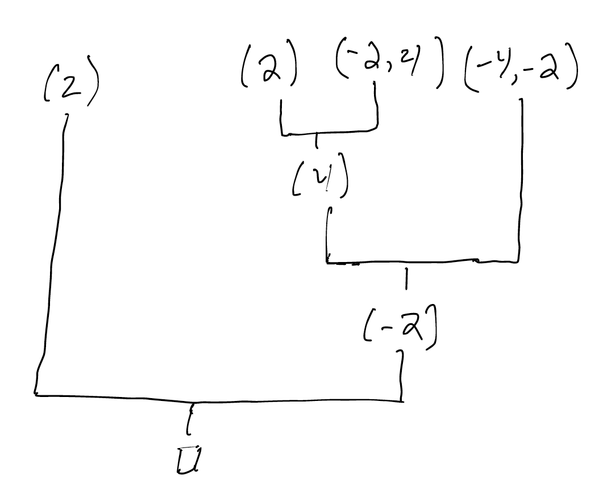
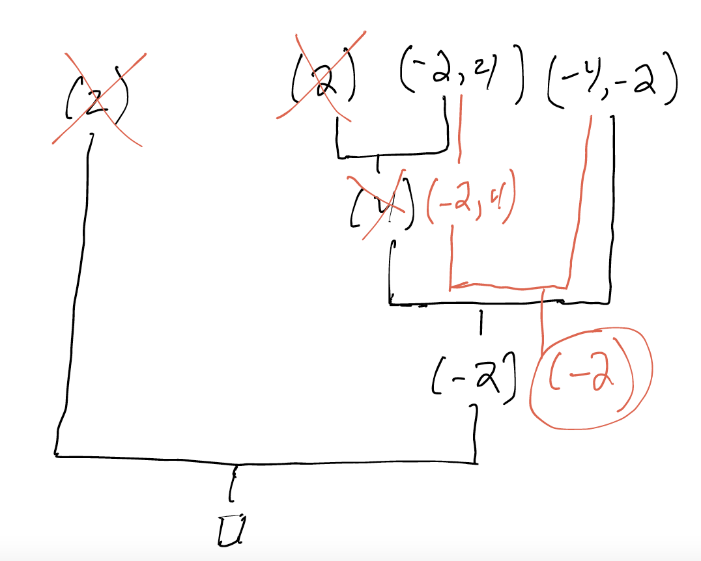

Resolution Proofs¶
Context: Proofs vs. Instances¶
Almost all of our work in this book so far has focused on satisfiability. We've put instances first: the things that either satisfy or dissatisfy a set of constraints.
But there's a second perspective, one that focuses on necessity, deduction, and contradiction—on justifying unsatisfiability with proof. This chapter is about exploring proofs in a way that's immediately applicable to what we already know. We'll cover a form of proof called resolution, and show how a basic version of a modern SAT solver can return a proof of unsatisfiability. This proof can then be processed to understand why a set of constraints is unsatisfiable.
We'll start simple, from CNF and unit propagation, and move on from there.
A Chain Rule For CNF¶
Suppose I know two things:
- it's raining today; and
- if it's raining today, we can't hold class outside.
I might write this more mathematically as the set of known facts: \(\{r, r \implies \neg c\}\), where \(r\) means "rain" and \(c\) means "class outside".
Symbols
Because the vast majority of the materials you might find on this topic are written using mathematical notation, I'm using \(\implies\) for implies and \(\neg\) for not. If you go reading elsewhere, you might also see \(\wedge\) for and and \(\vee\) for or.
Given this knowledge base, can we infer anything new? Yes! We know that if it's raining, we can't hold class outside. But we know it's raining, and therefore we can conclude that class needs to be indoors. This intuition is embodied formally as a logical rule of inference called modus ponens:
$\frac{A, A \implies B}{B}$
The horizontal bar in this notation divides the inputs to the rule from the outputs. For any \(A\) and \(B\), if we know \(A\), and we know \(A \implies B\), we can use modus ponens to deduce \(B\).
Does this remind you of something?
Modus ponens is very closely related to unit propagation. Indeed, that connection is what we're going to leverage to get our solvers to output proofs.
I like to think of rules of inference as little enzymes that operate on formula syntax. Modus ponens recognizes a specific pattern of syntax in our knowledge base and rewrites that pattern into something new. We can check rules like this for validity using a truth table:
| \(A\) | \(B\) | \(A \implies B\) |
|---|---|---|
| 0 | 0 | 1 |
| 0 | 1 | 1 |
| 1 | 0 | 0 |
| 1 | 1 | 1 |
In any world where both \(A\) and \(A \implies B\) are true, \(B\) must be true.
Remember that implies and or are related!
In classical logic (our setting for most of 1710), \(A \implies B\) is equivalent to \(\neg A \vee B\). Either \(A\) is false (and thus no obligation is incurred), or \(B\) is true (satisfying the obligation whether or not it exists).
Beyond Modus Ponens¶
Suppose we don't have something as straightforward as \(\{r, r \implies \neg c\}\) to work with. Maybe we only have:
- if it's raining today, we can't hold class outside; and
- if Tim is carrying an umbrella, then it's raining today.
That is, we have a pair of implications: \(\{u \implies r, r \implies \neg c\}\). We cannot conclude that it's raining from this knowledge base, but we can still conclude something: that if Tim is carrying an umbrella, then we can't hold class outside. We've learned something new, but it remains contingent: \(u \implies \neg c\).
This generalization of modus ponens lets us chain together implications to generate new ones:
$\frac{A \implies B, B \implies C}{A \implies C}$
Like before, we can check it with a truth table. This time, there are 8 rows because there are 3 inputs to the rule:
| \(A\) | \(B\) | \(C\) | \(A \implies B\) | \(B \implies C\) | \(A \implies C\) |
|---|---|---|---|---|---|
| 0 | 0 | 0 | 1 | 1 | 1 |
| 0 | 0 | 1 | 1 | 1 | 1 |
| 0 | 1 | 0 | 1 | 0 | 1 |
| 0 | 1 | 1 | 1 | 1 | 1 |
| 1 | 0 | 0 | 0 | 1 | 0 |
| 1 | 0 | 1 | 0 | 1 | 1 |
| 1 | 1 | 0 | 1 | 0 | 0 |
| 1 | 1 | 1 | 1 | 1 | 1 |
Note: This rule works no matter what form \(A\), \(B\), and \(C\) take, but for our purposes we'll think of them as literals (i.e., variables or their negation).
Propositional Resolution¶
The resolution rule is a further generalization of what we just discovered. Here's the idea: because we can view an "or" as an implication, we should be able to apply this idea of chaining implications to clauses.
First, let's agree on how to phrase clauses of more than 2 elements as implications. Suppose we have a clause \((l_1 \vee l_2 \vee l_3)\). Recall that:
- a clause is a big "or" of literals;
- a literal is either a variable or its negation; and
- \(\vee\) is just another way of writing "or".
We might write \((l_1 \vee l_2 \vee l_3)\) as an implication in a number of ways, e.g.:
- \((l_1 \vee l_2 \vee l_3) \equiv (\neg l_1 \implies (l_2 \vee l_3))\)
- \((l_1 \vee l_2 \vee l_3) \equiv (\neg l_2 \implies (l_1 \vee l_3))\)
- \((l_1 \vee l_2 \vee l_3) \equiv (\neg l_3 \implies (l_1 \vee l_2))\)
- \((l_1 \vee l_2 \vee l_3) \equiv ((\neg l_1 \wedge \neg l_2) \implies l_3)\)
- \((l_1 \vee l_2 \vee l_3) \equiv ((\neg l_1 \wedge \neg l_3) \implies l_2)\)
- \((l_1 \vee l_2 \vee l_3) \equiv ((\neg l_2 \wedge \neg l_3) \implies l_1)\)
So if we have a large clause, there may be more ways of phrasing it as an implication than we'd want to write down. Instead, let's make this new rule something that works on clauses directly.
How would we recognize that two clauses can be combined like the above? Well, if we see something like these two clauses:
- \((l_1 \vee l_2)\); and
- \((\neg l_1 \vee l_3)\)
then, if we wanted to, we could rewrite them as:
- \((\neg l_2 \implies l_1)\); and
- \((l_1 \implies l_3)\)
and then apply the rule above to get:
- \((\neg l_2 \implies l_3)\).
We could then rewrite the implication back into a clause:
- \((l_2 \vee l_3)\).
Notice what just happened. The two opposite literals have cancelled out, leaving us with a new clause containing everything else that was in the two original clauses.
$\frac{(A \vee B), (\neg B \vee C)}{(A \vee C)}$
This is called the binary propositional resolution rule. It generalizes to something like this (where I've labeled literals in the two clauses with a superscript to tell them apart):
$\frac{(l^1_1 \vee l^1_2 \vee ... \vee l^1_n), (\neg l_1 \vee l^2_1 \vee ... \vee l^2_m)}{(l^1_2 \vee l^1_n \vee l^2_1 \vee ... \vee l^2_m)}$
Resolution Proofs¶
What is a proof? For our purposes today, it's a tree where:
- each leaf is a clause in some input CNF; and
- each internal node is an application of the resolution rule to two other nodes.
Here's an example resolution proof that shows the combination of a specific 4 clauses is contradictory:

Proof trees are data!
This tree is not a paragraph of text, and it isn't even a picture written on a sheet of paper. It is a data structure, a computational object, which we can process and manipulate in a program.
Soundness and Completeness¶
Resolution is a sound proof system. Any correct resolution proof tree shows that its root follows unavoidably from its leaves.
Resolution is also refutation complete. For any unsatisfiable CNF, there exists a resolution proof tree whose leaves are taken from that CNF and whose root is the empty clause.
Resolution is not complete in general; it can't be used to derive every consequence of the input. There may be other consequences of the input CNF that resolution can't produce. For a trivial example of this, notice that we cannot use resolution to produce a tautology like \((l_1 \vee \neg l_1\) from an empty input, even though a tautology is always true.
Getting Some Practice¶
Here's a CNF:
Can you prove that there's a contradiction here?
Prove, then click!
Let's just start applying the rule and generating everything we can...

Wow, this is a lot of work! Notice two things: * we're going to end up with the same kind of 4-clause contradiction pattern as in the prior example; * it would be nice to have a way to guide generation of the proof, rather than just generating every clause we can. An early form of DPLL did just that, but the full algorithm added the branching and backtracking. So, maybe there's a way to use the structure of DPLL to guide proof generation...
Notice that one of the resolution steps you used was, effectively, a unit propagation step. This should help motivate the idea that unit propagation (into a clause were the unit is negated) is a special case of resolution:
$\frac{(A), (\neg A \vee ...)}{(...)}$
You might wonder: what about the other aspect of unit propagation---the removal of clauses entirely when they're subsumed by others?
Think, then click!
This is a fair question! Resolution doesn't account for subsumption because a proof is free to disregard clauses it doesn't need to use. So, while subsumption will be used in any practical solver, it's an optimization, not a critical component for guaranteeing refutation-completeness.
One variable at a time!
Don't try to "run resolution on multiple variables at once". To see why not, try resolving the following two clauses:
It might initially appear that these are a good candidate for resolution. However, notice what happens if we try to resolve on both 1 and 2 at the same time. We would get:
which is not a consequence of the input! In fact, we've mis-applied the resolution rule. The rule says that if we have \((A \vee B)\) and we have \((\neg A \vee C)\) we can deduce \((B \vee C)\). These letters can correspond to any formula---but they have to match! If we pick (say) \(1 \vee 2\) for \(A\), then we need a clause that contains $\neg A $, which is \(\neg (1 \vee 2)\), which is equivalent to \((\neg 1 \wedge \neg 2)\). That's not possible to see in clause; a clause has to be a big "or" of literals only. So we simply cannot run resolution in this way.
Following the rule correctly, if we only resolve on one variable, we'd get something like this:
which is always true, and thus usless in our proof, but at least not unsound. So remember: * always resolve on one variable at a time; and * if resolution produces a result that's tautologous, you can just ignore it.Learning From Conflicts¶
Let's return to that CNF from before:
Instead of trying to build a proof, let's look at what a DPLL implementation might do when given this input.
Do you have a DPLL implementation?
Depending on the context in which you're reading this book, you may be working on an assignment that implements DPLL. If that's the case, you should follow along in your own code as we proceed with this example. Your own implementation may be slightly different, of course.
- Called on:
[(-1, 2, 3), (1), (-2, 4), (-3, 5), (-4, -2), (-5, -3)] - Unit-propagate
(1)into(-1, 2, 3)to get(2, 3) - There's no more unit-propagation to do, so we need to branch. We know the value of
1, so let's branch on2and tryTruefirst. - Called on:
[(2), (2, 3), (1), (-2, 4), (-3, 5), (-4, -2), (-5, -3)] - Unit-propagate
(2)into(-2, 4)to get(4). - Remove
(2, 3), as it is subsumed by(2). - Unit-propagate
(4)into(-4, -2)to get(-2). - Remove
(-2, 4), as it is subsumed by(4). - Unit-propagate
(-2)into(2)to get the empty clause.
Upon deriving the empty clause, we've found a contradiction. Some part of the assumptions we've made so far (here, only that 2 is True) contradicts the input CNF.
Because the assumptions we made to reach a contradiction are not a productive path, we could learn a new clause that applies or to the negation of each assumption made: one of those variables must be set differently in order to find a satisfying instance.
But there might be many assumptions in general, so it would be good to do some sort of fast blame analysis: learning a new clause with 5 literals is a lot better than learning a new clause with 20 literals!
Here's the idea, in two steps: * We're going to record the unit-propagation steps the solver makes, and use those to derive a resolution proof that the input CNF plus some of the current assumptions lead to the empty clause. * We'll then reduce that proof into a "conflict clause". This is one of the key ideas behind a modern improvement to DPLL: CDCL, or Conflict Driven Clause Learning. We won't talk about all the tricks that CDCL uses here, nor will you have to implement them. If you're curious for more, consider shopping CSCI 2951-O. For now, it suffices to be aware that reasoning about why a conflict has been reached can be useful for improving performance, too.
In the above case, what did we actually use to derive the empty clause? Let's work backwards. We'll try to produce a linear proof where the leaves are input clauses or assumptions, and the internal nodes are unit-propagation steps (remember that these are just a restricted kind of resolution). We ended with:
- Unit-propagate
(-2)into(2)to get the empty clause.
The (2) was an assumption. The (-2) was derived:
- Unit-propagate
(4)into(-4, -2)to get(-2).
The (-4, -2) was an input clause. The (4) was derived:
- Unit-propagate
(2)into(-2, 4)to get(4).
The (-2, 4) was an input clause. The (2) was an assumption.
Now we're done; we have a proof:

Using only those two input clauses, we know that assuming (2) won't be productive, and (because we have a proof) we can explain why. And, crucially, because the proof is a data structure, we can manipulate it if we need to.
Explaining Unsatisfiable Results¶
This is promising: we have a piece of the overall proof of unsatisfiability that we want. But we can't use it alone as a proof that the input is unsatisfiable: the proof currently has an assumption (2) in it. We'd like to convert this proof into one that derives (-2)---the negation of the assumption responsible---from just the input.
Let's rewrite the proof we generated before. We'll remove assumptions from the tree and recompute the result of every resolution step, resulting in a proof of something weaker that isn't contingent on any assumptions. To do this, we'll recursively walk the tree, treating inputs as the base case and resolution steps as the recursive case. In the end, we should get something like this:

Notice that we need to re-run resolution after processing each node's children to produce the new result for that node. This suggests some of the structure we'll need:
- If one child is an assiumption, then "promote" the other child and use that value, without re-running resolution. (Think: Why is this safe to this? It has to do with the way DPLL makes guesses.)
- Otherwise, recur on children first, then re-run resolution on the new child nodes, then return a new node with the new value.
Combining sub-proofs¶
Suppose you ran DPLL on the false branch (assuming (-2)) next. Since the overall input is unsatisfiable, you'd get back a proof of (2) from the inputs. And, given a proof tree for (-2) and a proof tree for (2), how could you combine them to show that the overall CNF is unsatisfiable?
Think, then click!
Just combine them with a resolution step! If you have a tree rooted in (2) and another tree rooted in (-2), you'd produce a new resolution step node with those trees as its children, deriving the empty clause.
Takeaway¶
This should illustrate the power of being able to treat proofs as just another data structure. Resolution proofs are just trees. Because they are trees, we can manipulate them programatically. We just transformed a proof of the empty clause via assumptions into a proof of something else, without assumptions.
Property-Based Testing (the unsatisfiable case)¶
Given one of these resolution proofs of unsatisfiability for an input CNF, you can now apply PBT to your solver's False results, because they are no longer just False.
What properties would you want to hold?
Think, then click!
For the tree to prove that the input is unsatisfiable, you'd need to check: * the internal nodes of the tree are valid resolution steps; * the leaves of the tree are taken only from the input clauses; and * the root of the tree is the empty clause.